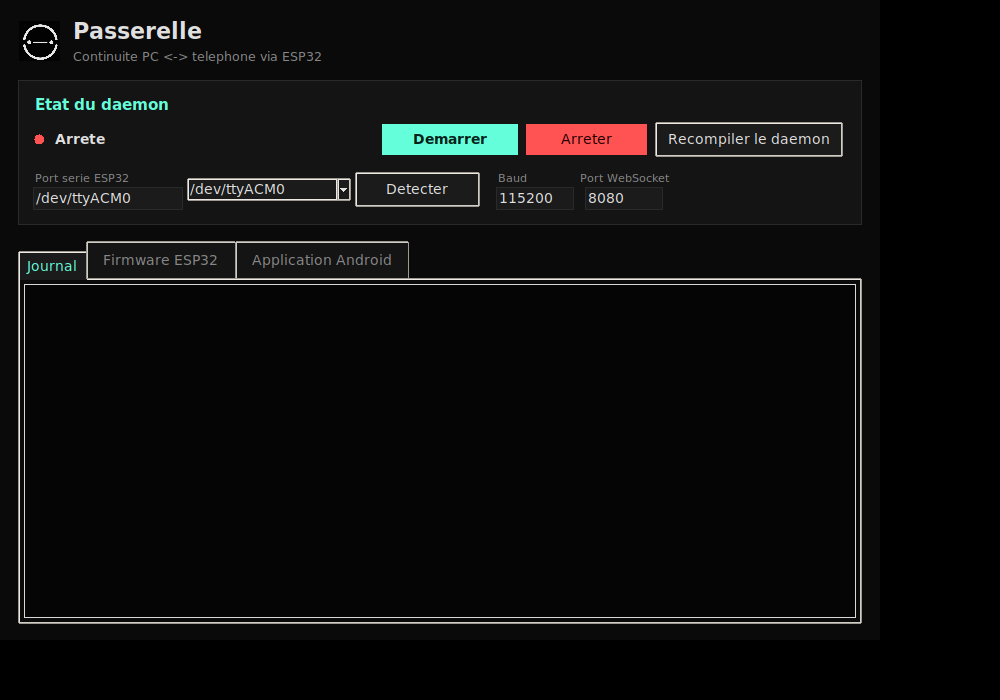

La continuité entre ton PC Linux et ton téléphone, portée par un boîtier ESP32 que tu contrôles de bout en bout — firmware, daemon et application compris.
Pas de simulation : la LED du boîtier et la carte de continuité de l'app affichent toutes les deux le même état, calculé à partir de la même télémétrie réelle.
La LED WS2812 réagit en continu à l'état réel du boîtier, sans intervention du PC.
Le même glyphe, animé en direct dans l'app, à partir des données WebSocket réelles reçues du daemon — Bluetooth, batterie, firmware, uptime.
Démarrer le daemon, compiler le firmware, flasher l'ESP32, générer l'APK Android — tout depuis une seule interface, sans mémoriser une seule commande.
Interface Tkinter native, thème sombre assorti à l'app. Détection automatique du port série, compilation du firmware, flash de l'ESP32, build de l'APK, et journal en direct du daemon.
Capture d'écran réelle du panneau en cours d'exécution.

Un script, toutes les dépendances, un raccourci dans le menu applications.
Détail complet de toutes les commandes (firmware ESP32, APK Android, service systemd) dans COMMANDES.md.
Trois pièces, une seule continuité
Chaque ligne JSON émise par le boîtier traverse le pipeline en quelques millisecondes, du port série jusqu'à l'écran du téléphone.